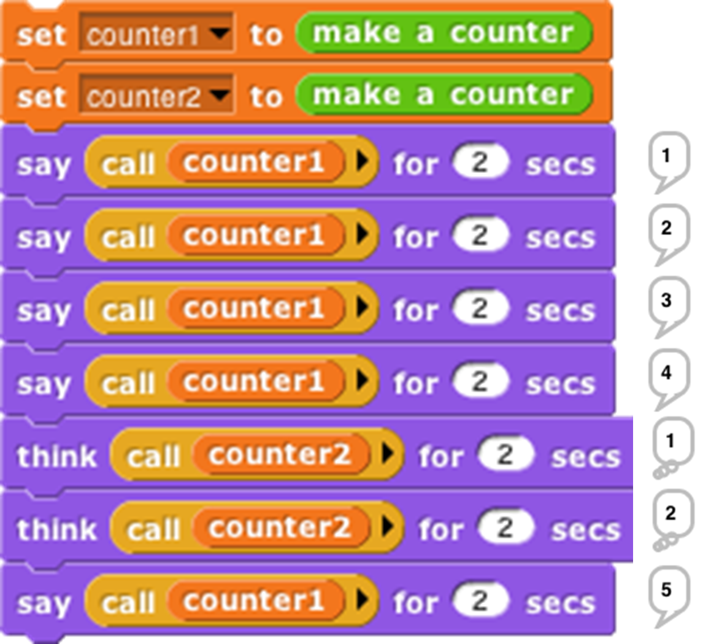
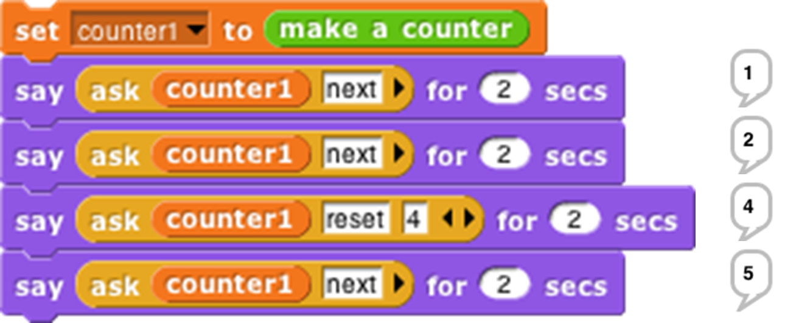

8 OOP with Procedures
The idea of object oriented programming is often taught in a way that makes it seem as if a special object oriented programming language is necessary. In fact, any language with first class procedures and lexical scope allows objects to be implemented explicitly; this is a useful exercise to help demystify objects.
The central idea of this implementation is that an object is represented as a dispatch procedure that takes a message as input and reports the corresponding method. In this section we start with a stripped-down example to show how local state works, and build up to full implementations of class/instance and prototyping OOP.
Local State with Script Variables

This script implements an object class, a type of object, namely the counter class . In this first simplified version there is only one method, so no explicit message passing is necessary. When the make a counter block is called, it reports a procedure, the ringed script inside its body. That procedure implements a specific counter object, an instance of the counter class . When invoked, a counter instance increases and reports its count variable. Each counter has its own local count:

This example will repay careful study, because it isn’t obvious why each instance has a separate count. From the point of view of the make a counter procedure, each invocation causes a new count variable to be created. Usually such script variables are temporary, going out of existence when the script ends. But this one is special, because make a counter returns another script that makes reference to the count variable, so it remains active. (The script variables block makes variables local to a script. It can be used in a sprite’s script area or in the Block Editor. Script variables can be “exported” by being used in a reported procedure, as here.)
In this approach to OOP, we are representing both classes and instances as procedures. The make a counter block represents the class, while each instance is represented by a nameless script created each time make a counter is called. The script variables created inside the make a counter block but outside the ring are instance variables, belonging to a particular counter.
Messages and Dispatch Procedures
In the simplified class above, there is only one method, and so there are no messages; you just call the instance to carry out its one method. Here is a more refined version that uses message passing :

Again, the make a counter block represents the counter class, and again the script creates a local variable count each time it is invoked. The large outer ring represents an instance. It is a dispatch procedure : it takes a message (just a text word) as input, and it reports a method. The two smaller rings are the methods. The top one is the next method; the bottom one is the reset method. The latter requires an input, named value.
In the earlier version, calling the instance did the entire job. In this version, calling the instance gives access to a method , which must then be called to finish the job. We can provide a block to do both procedure calls in one:

The ask block has two required inputs: an object and a message. It also accepts optional additional inputs, which Snap! puts in a list; that list is named args inside the block. Ask has two nested call blocks. The inner one calls the object, i.e., the dispatch procedure. The dispatch procedure always takes exactly one input, namely the message. It reports a method, which may take any number of inputs; note that this is the situation in which we drop a list of values onto the arrowheads of a multiple input (in the outer call block). Note also that this is one of the rare cases in which we must unringify the inner call block, whose value when called gives the method.

Inheritance via Delegation
So, our objects now have local state variables and message passing. What about inheritance ? We can provide that capability using the technique of delegation . Each instance of the child class contains an instance of the parent class , and simply passes on the messages it doesn’t want to specialize:

This script implements the buzzer class, which is a child of counter. Instead of having a count (a number) as a local state variable, each buzzer has a counter (an object) as a local state variable. The class specializes the next method, reporting what the counter reports unless that result is divisible by 7, in which case it reports “buzz.” (Yeah, it should also check for a digit 7 in the number, but this code is complicated enough already.) If the message is anything other than next, though, such as reset, then the buzzer simply invokes its counter’s dispatch procedure. So the counter handles any message that the buzzer doesn’t handle explicitly. (Note that in the non-next case we call the counter, not ask it something, because we want to report a method, not the value that the message reports.) So, if we ask a buzzer to reset to a value divisible by 7, it will end up reporting that number, not “buzz.”
An Implementation of Prototyping OOP
In the class/instance system above, it is necessary to design the complete behavior of a class before you can make any instances of the class. This is okay for top-down design, but not great for experimentation. Here we sketch the implementation of a prototyping OOP system: You make an object, tinker with it, make clones of it, and keep tinkering. Any changes you make in the parent are inherited by its children. In effect, that first object is both the class and an instance of the class. In the implementation below, children share properties (methods and local variables) of their parent unless and until a child changes a property, at which point that child gets a private copy. (If a child wants to change something for its entire family, it must ask the parent to do it.)
Because we want to be able to create and delete properties dynamically, we won’t use Snap! variables to hold an object’s variables or methods. Instead, each object has two tables, called methods and data, each of which is an association list: a list of two-item lists, in which each of the latter contains a key and a corresponding value. We provide a lookup procedure to locate the key-value pair corresponding to a given key in a given table.


There are also commands to insert and delete entries:


As in the class/instance version, an object is represented as a dispatch procedure that takes a message as its input and reports the corresponding method. When an object gets a message, it will first look for that keyword in its methods table . If it’s found, the corresponding value is the method we want. If not, the object looks in its data table . If a value is found there, what the object returns is not that value, but rather a reporter method that, when called, will report the value. This means that what an object returns is always a method.
If the object has neither a method nor a datum with the desired name, but it does have a parent, then the parent (that is, the parent’s dispatch procedure) is invoked with the message as its input. Eventually, either a match is found, or an object with no parent is found; the latter case is an error, meaning that the user has sent the object a message not in its repertoire.
Messages can take any number of inputs, as in the class/instance system, but in the prototyping version, every method automatically gets the object to which the message was originally sent as an extra first input. We must do this so that if a method is found in the parent (or grandparent, etc.) of the original recipient, and that method refers to a variable or method, it will use the child’s variable or method if the child has its own version.
The clone of block below takes an object as its input and makes a child object. It should be considered as an internal part of the implementation; the preferred way to make a child of an object is to send that object a clone message.

Every object is created with predefined methods for set, method, delete-var, delete-method, and clone. It has one predefined variable, parent. Objects without a parent are created by calling new object:

As before, we provide procedures to call an object’s dispatch procedure and then call the method. But in this version, we provide the desired object as the first method input. We provide one procedure for Command methods and one for Reporter methods:

(Remember that the “Input list:” variant of the run and call blocks is made by dragging the input expression over the arrowheads rather than over the input slot.)
The script below demonstrates how this prototyping system can be used to make counters. We start with one prototype counter, called counter1. We count this counter up a few times, then create a child counter2 and give it its own count variable, but not its own total variable. The next method always sets counter1’s total variable, which therefore keeps count of the total number of times that any counter is incremented. Running this script should [say] and (think) the following lists:
[1 1] [2 2] [3 3] [4 4] (1 5) (2 6) (3 7) [5 8] [6 9] [7 10] [8 11]